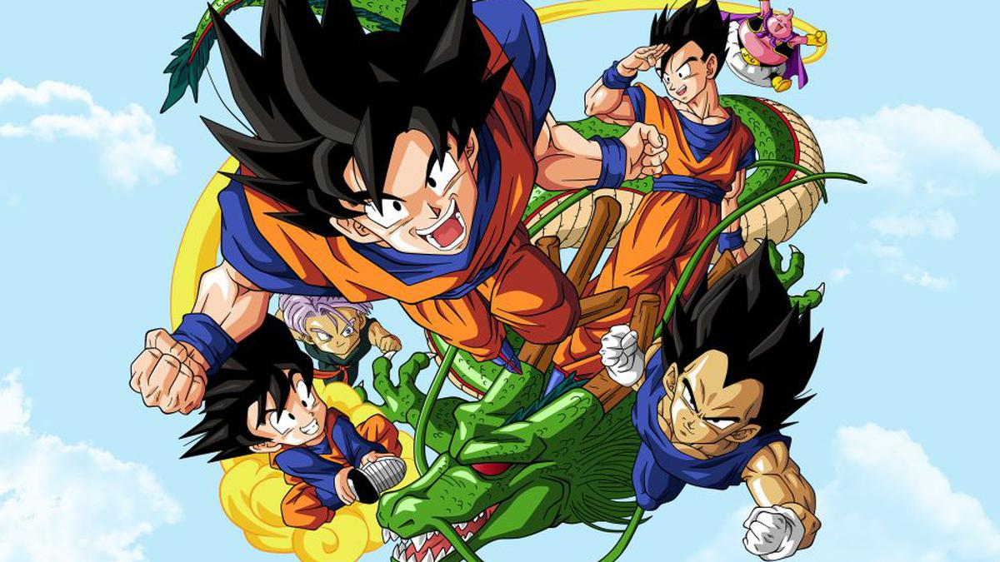

Bienvenidos a la camara del tiempo
Esta pagina web trata de dragon ball un anime creado por Akira Toriyama.
En este sitio te mostraremos que es dragon ball,sus origenes y como fue la infancia de muchos hoy en dia
Esta pagina web trata de dragon ball un anime creado por Akira Toriyama.
En este sitio te mostraremos que es dragon ball,sus origenes y como fue la infancia de muchos hoy en dia
Dragon ball es un anime que nos mustra la historia de goku un niño que viene de otro planeta(planeta Vegeta)
Su planeta es destruido por freser un gran villano de todo el anime.Goku llega a la tierra gracias a que sus padres lo sacaron antes de la destruccion
goku es salvado por un ansiano llamado gohan es educado pero goku es muy malo esto cambia hasta un golpe en la cabesa que se da muy pequeño
Esto aria que goku tenga muchas aventuras junto a sus amigos siendo un de los mas fuertes del mundo